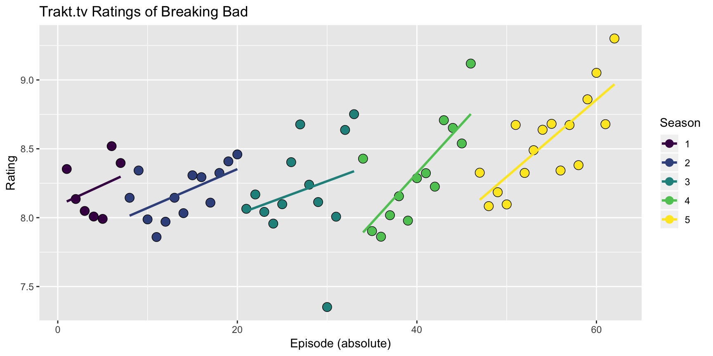
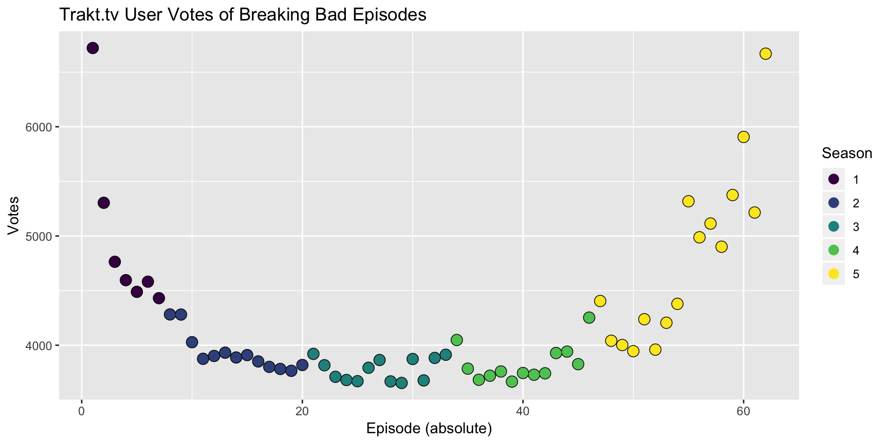
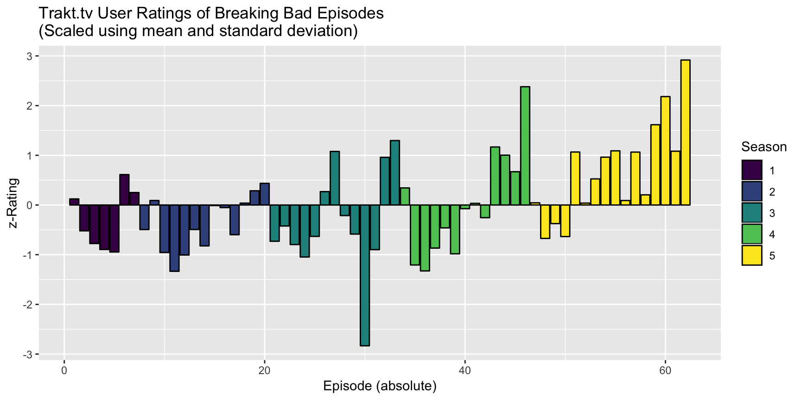

suppressPackageStartupMessages(library(tRakt))
suppressPackageStartupMessages(library(dplyr)) # For convenience
library(ggplot2) # For plotting (duh)
library(knitr) # for knitr::kable, used to render simple tables
# If you don't have a client.id defined in a key.json, use mine
if (is.null(getOption("trakt.client.id"))){
get_trakt_credentials(client.id = "12fc1de7671c7f2fb4a8ac08ba7c9f45b447f4d5bad5e11e3490823d629afdf2")
}There are two ways to search on trakt.tv. The first is via text query (i.e. Game of Thrones), the second is via ID (various types supported).
At the time of this writing (2015-02-16), the trakt.tv search is a little derpy, so search by ID is recommended.
# Search via text query
show1 <- trakt.search("Game of Thrones")
# Search via ID (trakt id is used by default)
show2 <- trakt.search.byid(1390) # trakt id of Game of Thrones
# The returned data is identical
identical(show1, show2)## [1] TRUE# Search a show and receive basic info
show <- trakt.search("Breaking Bad")
# Save the slug of the show, that's needed for other functions as an ID
slug <- show$ids$slug
slug## [1] "breaking-bad"# Get the season & episode data
show.seasons <- trakt.seasons.summary(slug, extended = "full") # How many seasons are there?
show.episodes <- trakt.get_all_episodes(slug, show.seasons$season, extended = "full")
# Glimpse at data (only some columns each)
rownames(show.seasons) <- NULL # This shouldn't be necessary
show.seasons[c(1, 3, 4)] %>% kable| season | votes | episode_count |
|---|---|---|
| 1 | 1518 | 7 |
| 2 | 1234 | 13 |
| 3 | 1141 | 13 |
| 4 | 1094 | 13 |
| 5 | 1212 | 16 |
| season | episode | title | rating | votes | tvrage |
|---|---|---|---|---|---|
| 1 | 1 | Pilot | 8.35322 | 6721 | 637041 |
| 1 | 2 | Cat’s in the Bag… | 8.13537 | 5304 | 637494 |
| 1 | 3 | …And the Bag’s in the River | 8.04870 | 4764 | 637644 |
| 1 | 4 | Cancer Man | 8.00827 | 4596 | 637645 |
| 1 | 5 | Gray Matter | 7.99109 | 4489 | 637646 |
| 1 | 6 | Crazy Handful of Nothin’ | 8.51921 | 4582 | 637647 |
| 1 | 7 | A No-Rough-Stuff-Type Deal | 8.39675 | 4431 | 640422 |
| 2 | 1 | Seven Thirty-Seven | 8.14433 | 4282 | 0 |
| 2 | 2 | Grilled | 8.34244 | 4281 | 0 |
| 2 | 3 | Bit by a Dead Bee | 7.98759 | 4028 | 692035 |
Plotting the data is pretty straight forward since I try to return regular data.frames without unnecessary ambiguitiy.
show.episodes$episode_abs <- 1:nrow(show.episodes) # I should probably do that for you.
show.episodes %>%
ggplot(aes(x = episode_abs, y = rating, colour = season)) +
geom_point(size = 3.5, colour = "black") +
geom_point(size = 3) +
geom_smooth(method = lm, se = F) +
labs(title = "Trakt.tv Ratings of Breaking Bad",
y = "Rating", x = "Episode (absolute)", colour = "Season")
show.episodes %>%
ggplot(aes(x = episode_abs, y = votes, colour = season)) +
geom_point(size = 3.5, colour = "black") +
geom_point(size = 3) +
labs(title = "Trakt.tv User Votes of Breaking Bad Episodes",
y = "Votes", x = "Episode (absolute)", colour = "Season")
show.episodes %>%
ggplot(aes(x = episode_abs, y = scale(rating), fill = season)) +
geom_bar(stat = "identity", colour = "black", position = "dodge") +
labs(title = "Trakt.tv User Ratings of Breaking Bad Episodes\n(Scaled using mean and standard deviation)",
y = "z-Rating", x = "Episode (absolute)", fill = "Season")
User-specific functions (trakt.user.*) default to user = getOption("trakt.username"), which should have been set by get_trakt_credentials(), so you get your own data per default.
However, you can specifiy any publicly available user. Note that OAuth2 is not supported, so by “publicly available user”, I really mean only non-private users.
# Get a detailed list of shows/episodes I watched
myeps <- trakt.user.watched(user = "jemus42", type = "shows.extended")
# Get a feel for the data
myeps %>%
arrange(desc(last_watched_at)) %>%
head(5) %>%
kable| title | season | episode | plays | last_watched_at | last_watched.year |
|---|---|---|---|---|---|
| Brooklyn Nine-Nine | 6 | 6 | 1 | 2019-02-17 00:28:17 | 2019 |
| Brooklyn Nine-Nine | 6 | 5 | 1 | 2019-02-17 00:05:39 | 2019 |
| Brooklyn Nine-Nine | 6 | 4 | 1 | 2019-02-16 23:43:31 | 2019 |
| Brooklyn Nine-Nine | 6 | 3 | 1 | 2019-02-16 23:20:34 | 2019 |
| Brooklyn Nine-Nine | 6 | 2 | 1 | 2019-02-16 22:59:13 | 2019 |
# …and the movies in my trakt.tv collection
mymovies <- trakt.user.collection(user = "jemus42", type = "movies")
mymovies %>%
select(title, year, collected_at) %>%
arrange(collected_at) %>%
head(5) %>%
kable| title | year | collected_at |
|---|---|---|
| In Bruges | 2008 | 2014-08-28 15:33:23 |
| Primer | 2005 | 2014-08-28 15:33:24 |
| I Know That Voice | 2014 | 2014-08-28 15:33:24 |
| Twelve Monkeys | 1995 | 2014-08-28 15:33:25 |
| Stargate: Continuum | 2008 | 2014-08-28 15:33:25 |
I tried my best to make the returned data as flat and usable as possible.
I tried.
So, well, let’s see: Take watched shows, diff the oldest and youngest lastwatched values to get something like a “watch duration” going and aggregate using it:
myeps %>%
group_by(title) %>%
summarize(days = as.numeric(round(max(last_watched_at) - min(last_watched_at)))) %>%
arrange(desc(days)) %>%
head(10) %>%
kable| title | days |
|---|---|
| Bob’s Burgers | 2170 |
| Family Guy | 2170 |
| The Simpsons | 2169 |
| Doctor Who | 2103 |
| The Walking Dead | 1979 |
| American Dad! | 1888 |
| South Park | 1863 |
| Dragon Ball | 1779 |
| Suits | 1743 |
| Attack on Titan | 1666 |
It’s data like this that makes me wish I had been using trakt.tv forever. The potential for interesting data is great, but the limit is, as usual, the source of the data.